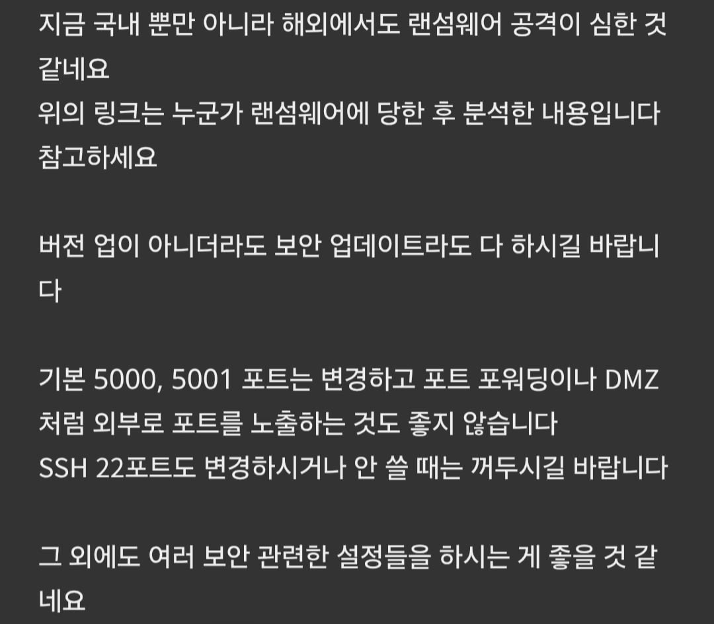
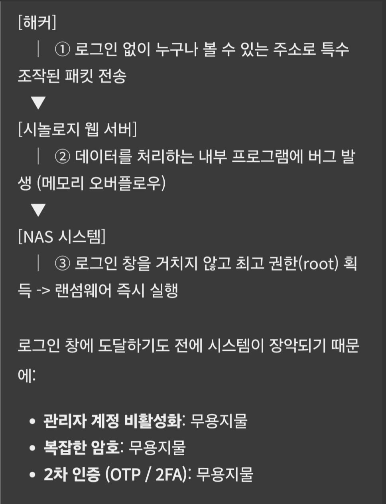

Dsm 역방향 프록시 안한 개붕이들 지금즉시 체크업 하슈
포트개방 여부에따라서 랜섬공격 심각하다
자고일어났는데 nas전체 랜섬처먹는거는 막아라

역프록시 안해놨으면 cve 다이렉트다 얼른 조치하슈
CVE-2026-13684 CVE-2026-13639 두개 이고 9.8점 빅구멍이다
NAS쓰는 지인있으면 알려줘

Dsm 역방향 프록시 안한 개붕이들 지금즉시 체크업 하슈
포트개방 여부에따라서 랜섬공격 심각하다
자고일어났는데 nas전체 랜섬처먹는거는 막아라

역프록시 안해놨으면 cve 다이렉트다 얼른 조치하슈
CVE-2026-13684 CVE-2026-13639 두개 이고 9.8점 빅구멍이다
NAS쓰는 지인있으면 알려줘
다행히 시놀로지 공홈에 있는 최근 펌웨어랑 같은 버전이네
돈없어서 라즈베리 파이에 나스 만들어 쓰는데 와이어가드로 접속해서 괜찮을듯
DSM 단독임
9월 18일에 발표된거였네 php 취약점이랑 별개임
DSM 7.2.1 7.2.1-69057 Update 12 이상
DSM 7.2.2 7.2.2-72806 Update 9 이상
DSM 7.3.2 7.3.2-86009 Update 4 이상
DSM 7.4 7.4-90075 이상
이거면 안전하데
ㄳㄳ. 일단 꺼뒀는데 7.4 버전에서도 취약점 9.8 발견됐네. 계속 꺼둬야겠음 일단은
헉
큐냅은 괜찮은가 말이없네
윈도우 보안업뎃만 최신으로 해놓으면 감염예방 되는거 아니었음?